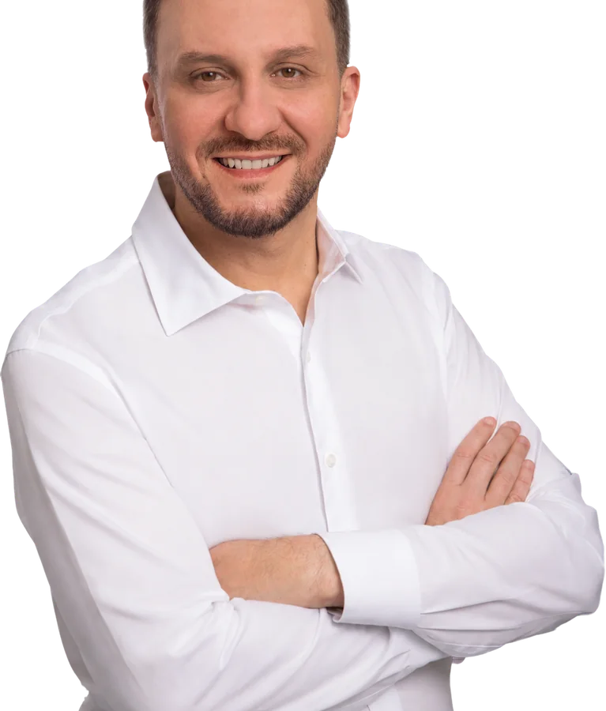

Molhes da Barra e dragagem do Porto de Laguna
Projeto executivo da dragagem do canal e da remodelagem dos molhes. É o que destrava o porto, a pesca e o Rio Tubarão de uma vez só, e nenhuma cidade do complexo lagunar resolve isso sozinha.
Tubarão nunca precisou de promessa. Precisou de voz onde as decisões são tomadas, e de alguém que conhece a cidade rua por rua. Esta página é a conta do que foi feito.

Obra grande não nasce no dia da inauguração. Nasce no projeto, na emenda, na cobrança que não desiste. Estas são as maiores destinações do mandato para Tubarão.
Projeto executivo da dragagem do canal e da remodelagem dos molhes. É o que destrava o porto, a pesca e o Rio Tubarão de uma vez só, e nenhuma cidade do complexo lagunar resolve isso sozinha.
Garantidos pela Bancada do Sul, com R$ 2 milhões indicados pelo mandato. A avenida não liga só um ponto ao outro: organiza o trânsito e prepara Tubarão para continuar crescendo.
O maior pacote de asfalto do mandato para a cidade, construído junto com as demandas trazidas pelos vereadores de Tubarão.
Recurso já pago, aplicado nas vias que a prefeitura apontou como prioridade de mobilidade.
Obra boa é a que resolve o problema de verdade. Onde antes era barro, hoje tem acesso e dignidade para quem mora ali. E quando a chuva chega, a rua continua sendo rua.
Dois pacotes somados para asfalto e escoamento de água em vias do município: a parte invisível da obra, que é justamente a que impede o alagamento.
Projeto com a CDL para tirar a fiação do céu do centro de Tubarão. É segurança, é comércio mais forte e é uma cidade que se olha no espelho com orgulho.
Quem mora numa rua sem infraestrutura sabe que o problema nunca foi só o barro. É a poeira dentro de casa, o medo de cair de moto, o ônibus que não passa. Transformar Tubarão nunca foi sobre construir ruas: sempre foi sobre melhorar a vida das pessoas.
Estas são 43 das mais de 60 ruas de Tubarão que receberam pavimentação, drenagem ou rede de esgoto com participação direta do mandato.
Emenda não é só asfalto. É o hospital que não fecha, a APAE que atende, a viatura que chega a tempo e a entidade que sustenta o que o poder público sozinho não alcança.
Custeio do Hospital Nossa Senhora da Conceição e recursos para ampliar e qualificar os atendimentos do SUS em Tubarão e região.
Equoterapia e terapia ocupacional na APAE de Tubarão, e o parque infantil adaptado para crianças com transtorno do espectro autista.
Uma camionete 4x4 para os Bombeiros, viatura essencial em operações de resgate, e um veículo para a Polícia Militar.
Custeio das demandas da rede municipal e a área coberta do Centro Educacional Santo Afonso, para que chuva não cancele aula nem recreio.
Custeio da Secretaria de Esportes: APROET, ADFT, Churrascada e os projetos de robótica que colocam a molecada de Tubarão para criar.
Rede Feminina de Combate ao Câncer, Clube de Mães, COMBEMTU, STAN, Rotary, Orquestra Santa Teresinha do Menino Jesus, Sertão dos Correas e o Sigma Park, o centro de inovação da cidade.
Os problemas da nossa região nunca respeitaram divisas. Quando o Morro dos Cavalos fecha, não é só uma rodovia que para: é o trabalhador, é a empresa, é o Sul inteiro. Por isso Tubarão nunca pode pensar sozinha.
Dragagem do canal e derrocagem do molhe já licitadas, batimetrias concluídas no molhe, no canal até o porto e no trecho interno até a ponte férrea. Previsão de entrega do projeto: dezembro de 2026.
Com o projeto executivo garantido, a próxima etapa é a obra. É o que devolve calado ao porto e segurança à frota que sai daqui.
R$ 6 milhões da Bancada do Sul para abrir a avenida e reorganizar o acesso à cidade.
Ligação que Tubarão usa todo dia e que o Estado precisa tratar como rodovia de verdade.
O aeroporto do Sul catarinense só cumpre o papel dele com voos regulares e infraestrutura à altura, e quem ganha é toda a região.
Acesso do interior e da produção, na lista de pautas tubaronenses defendidas pela Bancada do Sul.
O Sul não pode continuar refém de um único caminho. Túnel, rotas alternativas e um porto forte são pauta de Tubarão também.